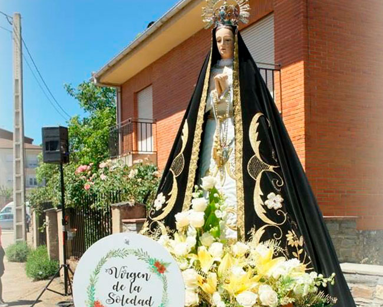

Se encuentra situado en la zona oeste de la provincia de Zamora, a 59 km de Zamora
Su nombre es de origen árabe y significa las iglesias, o las cañas o cañizos según otros, pero su origen pudo haber sido un castro zoela de los primeros pobladores astures de la comarca a la que pertenece. Alcañices se reencontró en la historia de la mano de Alfonso IX de León que la configuró como fortaleza de frontera y la cedió como encomienda a la Orden del Temple en 1175.9 Esta situación la completó Alfonso X el Sabio el 5 de julio de 1255, cuando otorgó a los templarios la renta martiniega de Aliste y Alcañices. Durante el Renacimiento fue villa de señorío y cabeza del Marquesado de Alcañices. En general esta villa es partícipe de algunos hitos de la historia de España, pero por el que es especialmente recordada es por haber sido sede del Tratado de Alcañices que el 12 de septiembre de 1297 definió la frontera entre Portugal y la Corona de Castilla, la más antigua de Europa.
En este pueblo la virgen es muy famosa y van muchos portugeses y gente de la zona a verla y rezarla
Aconinuacion en el sigueinte video explican sobre las costumbres del pueblo y muchas mas cosas